ITS Angelo Rizzoli
Costruiamo insieme il tuo futuro.
I corsi dell’ITS Academy Angelo Rizzoli
- I corsi in ambito Grafica e Comunicazione
-
- ITS Omnichannel Communication Specialist
- ITS Packaging Specialist
- IFTS Packaging Industriale
- ITS Digital Marketing Data Specialist
- I corsi in ICT e Digital Transformation
-
- ITS Network and Cloud Specialist
- ITS Cyber Defence Specialist
- IFTS Developer
- ITS Software Architect Specialist
- ITS Big Data Specialist
- ITS Industrial Digital Transformation
- ITS AI and Machine Learning Specialist